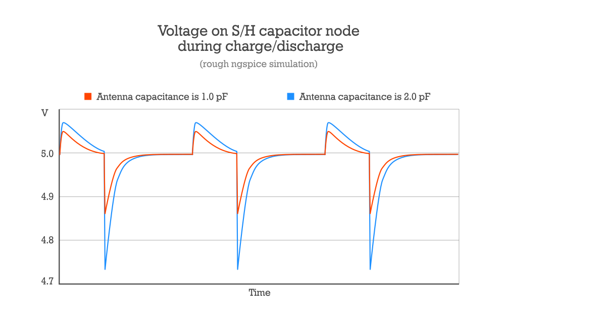

This project was inspired by Tim’s Tiny Theremin.
A tiny theremin with only one component — Atmel ATtiny85 8-bit microcontroller.
To make the theremin you will need (at least):
along with a 5 volts power source, facilities to flash the controller (AVR programmer) and a breadboard or some more wires plus soldering iron.
Here’s the connection diagram:
For those, who are brave enough to hear me playing it (real guitar as an accompaniment plus some reverb):
Clean full range record:
The principle is simple. Pin stray capacitance is getting charged to 5 volts over pin’s pull-up resistor during non-sampling ADC period (most of the time). Then, in sync with sampling time, while pull-up resistor stays enabled, everything is getting discharged by a discharge pulse coming from other pin, directly connected to human body. The human-antenna capacitance determines discharge level of the stray capacitance.
The more human-antenna capacitance (closer to antenna), the deeper stray capacitance gets discharged.
Pull-up resistor decreases input impedance, which helps against mains EMI.
Here’s the schematic of a pin connected to the ADC peripherals:

And here’s the simulation of how voltage on the ADC’s sample and hold capacitor behaves during dischage pulses, depending on the antenna capacitance.

Differential input mode of ADC, along with programmable gain, makes it really easy to measure tiny voltage changes, especially when internal 1.1V source is selected as a reference. But actual measurements are very noisy, considering their digital nature, so they are highly filtered (averaged) before passing for subsequent processing.
Code is written using GNU Assembler for AVR.
To build it you need avr-gcc or avr-binutils to be installed. On a Unix-like system run
./build theremin
You should get theremin.bin file, which has to be flashed onto an ATtiny85.
Low fuse byte must be programmed to: 11100001 (16 MHz clock from PLL).
Every instrument is different and has to be tuned before playing. For the Tiny Theremin it is not so simple.

You must have some SPI on your PC to connect to an ATtiny85 and to read ADC data it sends. For this purpose a special piece of code is used. The program is intended only for debugging and tuning. To build it run
./build tune_spi
You should get tune_spi.bin file, which has to be flashed onto an ATtiny85.
After flashing, with each byte read from an MCU you will alternately get an averaged ADC value from each of two antennas. A simple console Python script for displaying the data is provided.
Take a look at another files in the scripts folder as well as the
assembler sources.